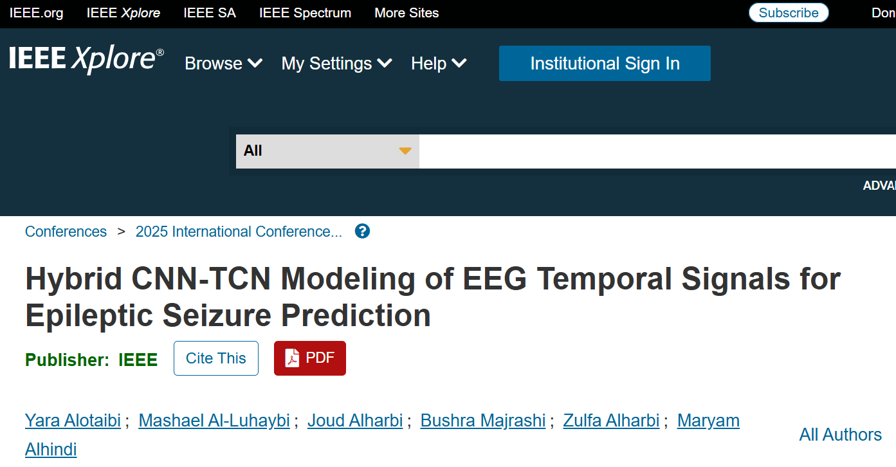
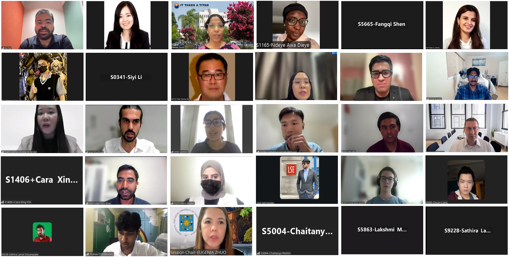
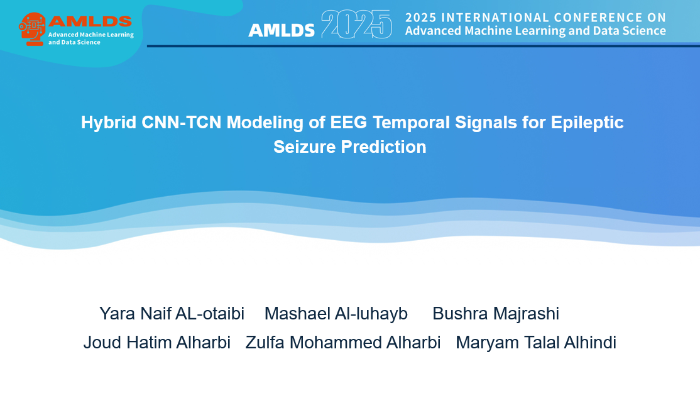

Most prior work on EEG seizure prediction either models the spatial relationships between electrode channels or the temporal patterns within the signal, rarely both at once. This paper proposes a hybrid CNN-TCN architecture that closes the gap by combining the two: convolutional layers capture patterns across EEG channels, while temporal convolutional layers track how those patterns evolve. Tested against CNN, LSTM, and LSTM-TCN baselines on the CHB-MIT dataset, the hybrid model reached 99.49% accuracy and a perfect AUC of 1.00 under 10-fold cross-validation.
معظم الدراسات السابقة حول التنبؤ بنوبات الصرع باستخدام تخطيط كهربية الدماغ (EEG) تركز إما على نمذجة العلاقات المكانية بين قنوات الأقطاب الكهربائية أو الأنماط الزمنية داخل الإشارة، ونادرًا ما تجمع بينهما. تقترح هذه الورقة البحثية بنية هجينة تجمع بين الشبكات العصبية الالتفافية (CNN) والشبكات العصبية الزمنية الالتفافية (TCN) لسد هذه الفجوة: حيث تقوم الطبقات الالتفافية بالتقاط الأنماط عبر قنوات تخطيط كهربية الدماغ، بينما تتعقب الطبقات الزمنية الالتفافية كيفية تطور هذه الأنماط. عند اختبار النموذج الهجين على مجموعة بيانات CHB-MIT ومقارنته بنماذج CNN وLSTM وLSTM-TCN الأساسية، حقق دقة بلغت 99.49% ومساحة مثالية تحت المنحنى (AUC) قدرها 1.00 باستخدام التحقق المتقاطع بعشر طيات.
Read the full paper (IEEE Xplore) اقرأ البحث كاملاً (IEEE Xplore)

Seizable system behind this paper placed 1st at Umm Al-Qura University's entrepreneurial exhibition see the full project write-up for the engineering side of this research. نظام Seizable وراء هذا البحث حصل على المركز الأول بمعرض جامعة أم القرى الريادي اذهب للصفحة المشروع لرؤية الجانب الهندسي الكامل من البحث.
View the Seizable project → شاهد مشروع Seizable ←